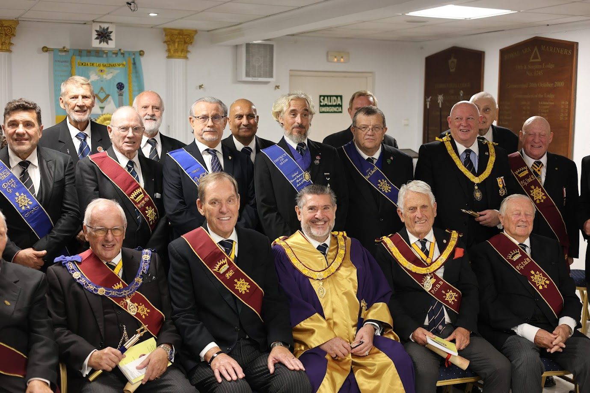

Hermandad de David y Jonatán
Orden del Monitor Secreto
Inspirada en la amistad de David y Jonatán, cultiva la lealtad, la confianza mutua y el cuidado fraterno. Está abierta a los Maestros Masones de Logias regulares y se reúne en Cónclaves.